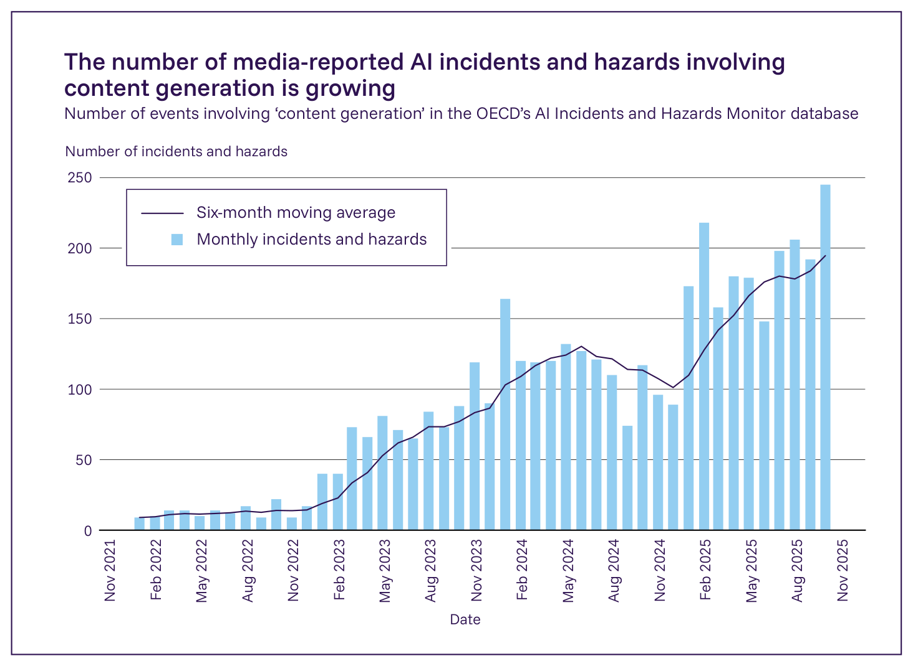
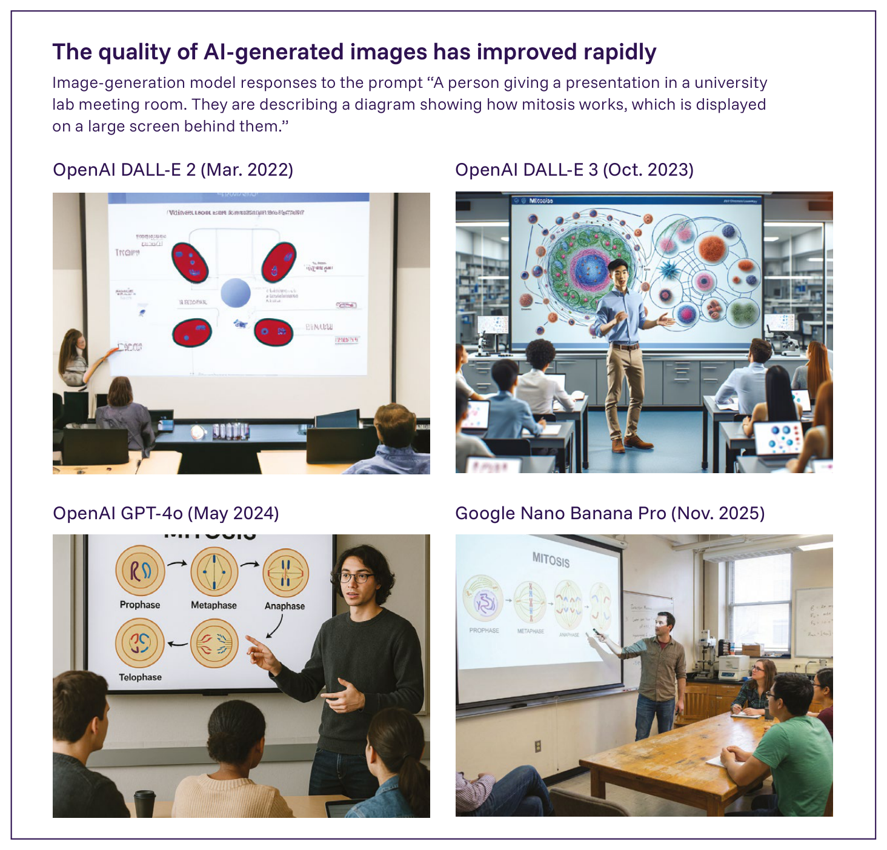

日本語訳
| 害の種類 | 説明 |
|---|---|
| 名誉毀損 | 個人が、性行為や薬物使用といった不都合な活動に従事しているように見せかける偽コンテンツを生成し、その後、そのコンテンツを公開することで、その人物の評判を傷つけ、キャリアに害を与え、および/または（政治、ジャーナリズム、エンターテインメントなどにおける）公的な活動から手を引かせようとすること（286）。 |
| 心理的虐待/いじめ | 主として虐待し心理的トラウマを与える目的で、個人についての有害な描写を生成すること（287）。被害者はしばしば子どもである。 |
| 詐欺 | 例えば金融取引を承認させるために、（被害者の声になりすました音声クリップなどの）コンテンツを生成するためにAIを使用すること（288）。 |
| 恐喝 | 本人の同意なく、親密な画像などの個人の偽コンテンツを生成し、金銭的要求が満たされない限りそれを公開すると脅すこと（289）。 |

Figure 2.1: OECDのAI Incidents and Hazards Monitorデータベースにおいて時間経過とともに報告された「コンテンツ生成」に関わる事案の数。これには、ディープフェイクのポルノグラフィー画像のようなAI生成コンテンツに関わる事案が含まれる。月次の報告事案数は2021年以降著しく増加している。出典: OECD AI Incidents and Hazards Monitor (301)。

Figure 2.2: リリース当時最先端とみなされた画像生成ツールを使用して作成されたAI生成画像。これらの画像は、AI生成画像がわずか数年でどれほど写実的になったかを示している。出典: International AI Safety Report 2026。画像生成モデルの、「大学の研究室のミーティングで発表をしている人物。彼らは、後ろの大画面に表示されている、有糸分裂の仕組みを示す図について説明している」というプロンプトへの応答。